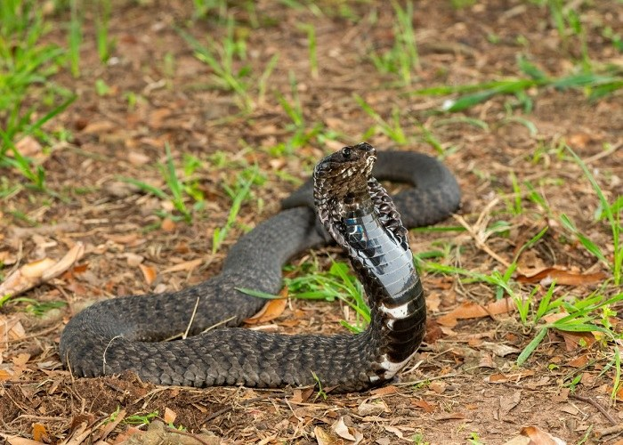
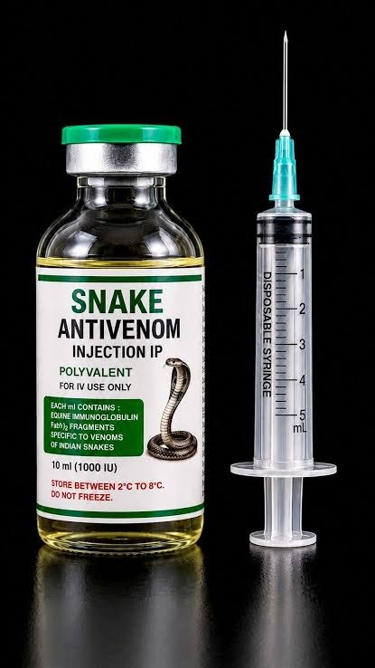

01 / VENOM SCIENCE
Venom & antivenom research
Investigating venom variation and activity to inform the development of effective, targeted therapeutics.
Explore research ↗Ghana · Research · Public health
iMass Innovation works across venom research, clinical insight and public health to help develop and deliver better responses to snakebite.

The challenge
Effective responses rely on sound research, accessible care, well-informed communities and collaboration across health systems.
What we work on
Our approach brings together complementary areas of work, with the shared aim of improving prevention, treatment and outcomes.

Investigating venom variation and activity to inform the development of effective, targeted therapeutics.
Explore research ↗
Understanding the effects of snakebite and assessing the quality and impact of available treatments.
Our research priorities ↗
Supporting awareness, healthcare capacity and evidence-informed action across the response.
Learning and capacity ↗Our approach
We connect scientific discovery, clinical research, community engagement and policy advocacy. Working with partners, we aim to strengthen the evidence and local capacity needed for practical progress.
Learn about our mission ↗Work with us
Whether you are a researcher, healthcare professional, institution, community organisation or supporter, there is room for constructive collaboration.